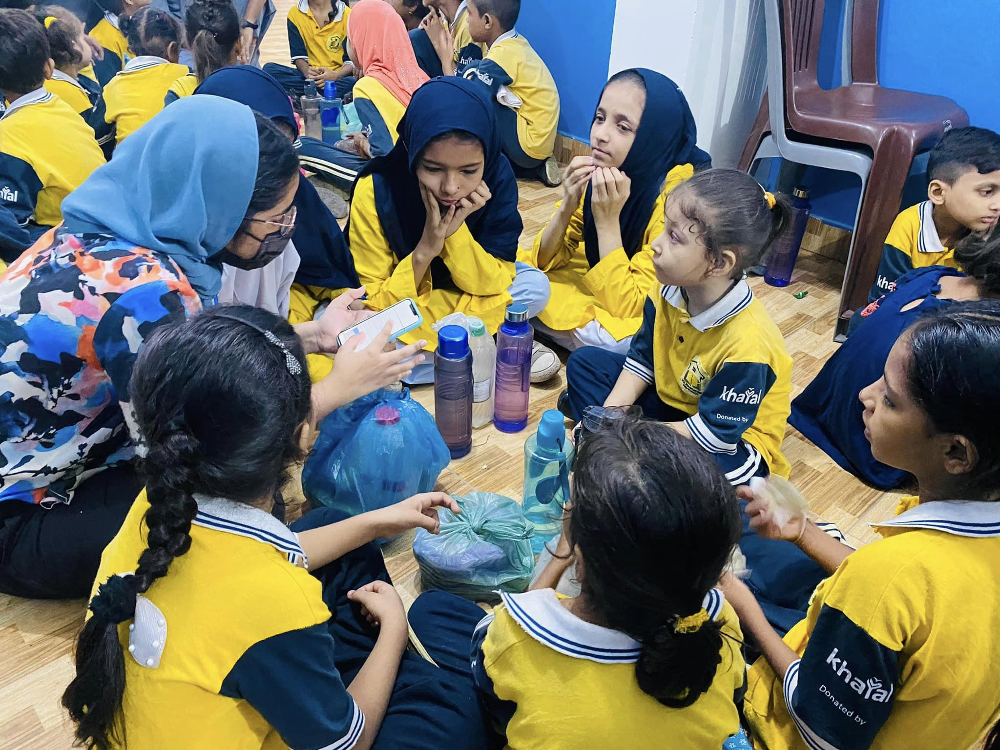
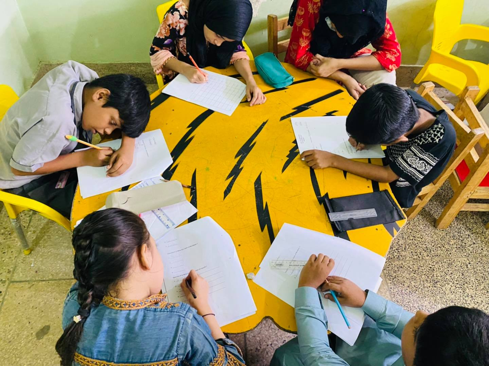

Encouraged through early learning
← Our work
HOL Preschool for brighter futures.
A warm beginning for young learners and the families who support them.
Ask about HOL Preschool ↗04 Locally rooted. Future focused.

The first steps in learning matter.
Growing with every new discovery
Explore, discover, grow.
HOL Preschool provides a community-centered beginning where young children can build foundations for their school years.
Learning through play
Give young learners space to explore ideas and the world around them.
Confidence and curiosity
Encourage children to ask questions, try new things and learn together.
School readiness
Build a strong foundation for the next stage of each child learning journey.
A bright beginning for young learners.
A caring preschool environment can help children feel welcome, build confidence and develop a love of learning.
HOL Preschool is part of a connected pathway that helps children stay engaged in learning as they grow.
Explore all HOL programs ↗